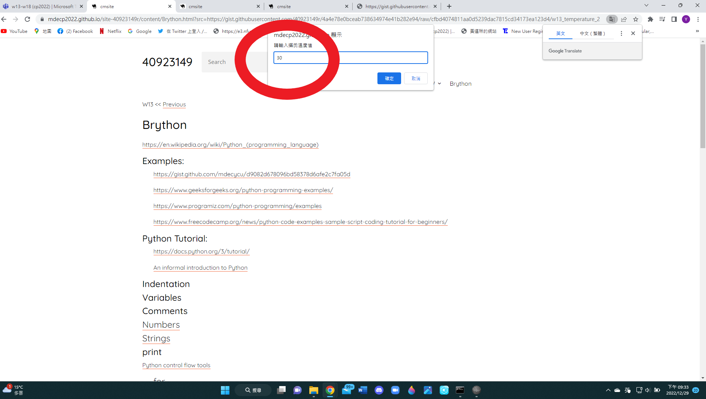
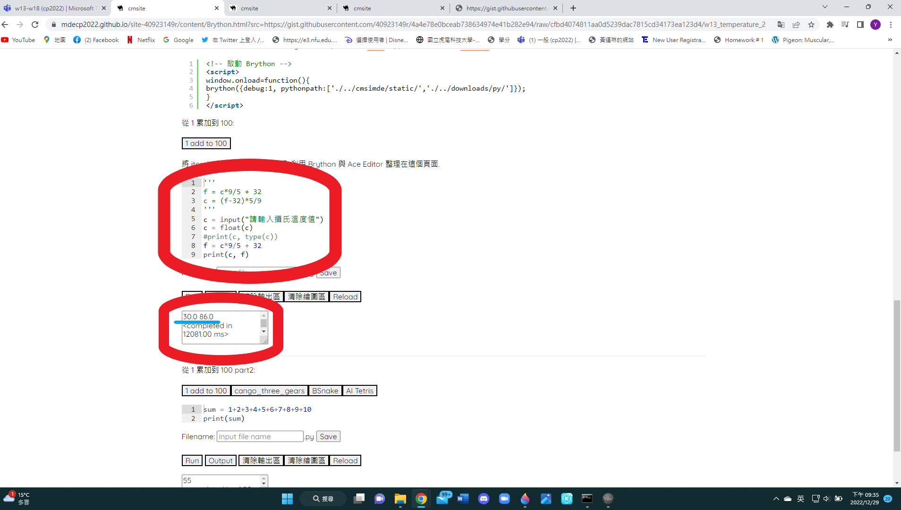

W12 <<
Previous Next >> W14
W13
溫度1
'''
f = c*9/5 + 32
c = (f-32)*5/9
'''
c = input("請輸入攝氏溫度值")
c = float(c)
print(c, type(c))
溫度2
'''
f = c*9/5 + 32
c = (f-32)*5/9
'''
c = input("請輸入攝氏溫度值")
c = float(c)
#print(c, type(c))
f = c*9/5 + 32
print(c, f)
心得:在跳出的視窗輸入你需要的攝氏溫度(30)，下方就會跑出轉換後的華氏溫度(86)。


Question:
Q1.何謂 Brython 程式環境?
A1.
一般來說， linux based 的電腦中會安裝好系統自帶的 Python。不過這可能會有幾個問題出現，所以，身為一個開發者來說，我們會想要讓我們的環境上可以支援不同的 Python 版本，每個專案也有擁有自己的套件環境。專案環境彼此獨立，開發也不容易出現互相干擾衝突的情況。網路上有許多解決方案。
Q2.如何編寫單位轉換程式?
A2.單位轉換程式就是老師有講解到的(攝氏溫度轉換成華氏溫度)
Python 的內建型態主要分為以下三種：
1.數值型態：int, float, bool
2.字串型態：str, chr
3.容器型態：list, dict, tuple
Python 中有數值、字串與字元的資料型別，以及不同型別之間的轉換方式
在Python中，一個字串的資料，是用兩個單引號或兩個雙引號括起來的
字元就是組成字串的元素
要轉換就需要用到布林值，布林值通常是一個運算的結果。
Q3.如何將在近端編寫的程式儲存至個人的 Gist 區域? 如何引用 Gist 程式?
A3.
Q4.如何將近端的動態與靜態網站內容, 以 http 網路協定提交推送到 Github 雲端主機? (為什麼要將資料存在雲端?能不能直接在雲端上編寫 Brython 程式?然後將程式存)
A4.
W12 <<
Previous Next >> W14